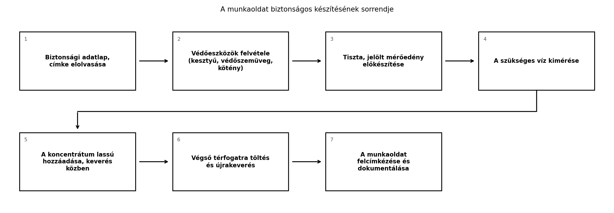

Egy pékségben naponta többféle vegyszert használnak: kézfertőtlenítőt, felülettisztítót, zsíroldót, esetenként savas vízkőoldót és a pereckészítéshez lúgos oldatot. Mindegyik koncentrált formában, flakonban vagy kannában érkezik, és szinte soha nem közvetlenül, hanem munkaoldatként – azaz vízzel hígítva – kerül felhasználásra. Ha a pék rosszul hígít, akkor vagy túl tömény lesz az oldat, ami marhatja a bőrt, károsíthatja a felületet vagy veszélyes maradékot hagyhat az élelmiszerrel érintkező eszközön, vagy túl híg, ami nem fertőtlenít megfelelően, és láthatatlan mikrobiológiai kockázat marad. Ezért a kémiai biztonság és a hígítási számítás nem „vegyész-téma”, hanem mindennapi pékfeladat: aki munkaoldatot készít, annak értenie kell a címkét, a biztonsági adatlapot és azt, hogy mennyi koncentrátumot, mennyi vízhez mérjen.
A munkaoldat készítése mindig azonos, biztonságos sorrendben történik:

A rajz azt üzeni: először víz, utána vegyszer, és minden lépésnél a gyártói utasítás az elsődleges. Ez azért fontos, mert a tömény sav vagy lúg vízbe öntéskor felmelegedhet, fröcskölhet; a jó sorrend csökkenti a baleset esélyét.
Definíció. A CLP-veszélyjel (piktogram) olyan, a csomagoláson elhelyezett, piros keretes, rombusz alakú, fehér hátterű, fekete szimbólumot tartalmazó jel, amely a vegyi anyag vagy keverék veszélyességére figyelmeztet. A CLP-rendelet (1272/2008/EK) szerint a szállítónak a veszélyes anyagot vagy keveréket osztályoznia és címkéznie kell (ellenőrizendő: a CLP-rendelet mindenkor hatályos szövege és mellékletei). A pékségben leggyakrabban az alábbi veszélyjelekkel találkozhat a tanuló:
| Piktogram jelölése | Jelentése a pékségben | Tipikus példa |
|---|---|---|
| GHS05 (maró) | Maró hatású fémre, bőrre vagy szemre. | Erős lúgos sütőtisztító, pereclúg, savas vízkőoldó. |
| GHS07 (irritatív) | Bőr- vagy szemirritációt, esetleg légúti irritációt okozhat. | Hígított fertőtlenítőszerek, általános tisztítószerek. |
| GHS09 (környezeti veszély) | A vízi környezetre veszélyes lehet. | Klórtartalmú fertőtlenítők, egyes lúgos oldatok. |
| GHS02 (tűzveszélyes) | Gyúlékony folyadék vagy gőz. | Alkoholos kézfertőtlenítő, alkoholos felületfertőtlenítő. |
| GHS08 (egészségkárosító) | Rákkeltő, mutagén, légzőszervi szenzibilizáló vagy egyéb súlyos egészségkárosító hatás. | Ritkábban, de előfordulhat formaldehid-leadó fertőtlenítőszernél (ellenőrizendő: az adott termék adatlapja). |
A piktogram mellett a címkén figyelmeztető mondatok (H-mondatok) és óvintézkedésre vonatkozó mondatok (P-mondatok) is szerepelnek. A H-mondat a veszély pontos jellegét írja le (például „Súlyos égési sérülést okoz”), a P-mondat a megelőzést, az elhárítást és a tárolást segíti (például „Védőkesztyű/védőruha/szemvédő használata kötelező”, „Savval nem keverhető”). A tanulónak nem kell kívülről tudnia az összes kódszámot, de a piktogramot és a figyelmeztetést (a „Veszély” vagy „Figyelem” jelzőszót) fel kell ismernie.
Az alábbi mintacímke egy kitalált lúgos sütőtisztítón mutatja meg, hol találod a címke kötelező elemeit: a termékazonosítót a veszélyt okozó összetevővel (1), a GHS05 maró piktogramot (2), a „Veszély” figyelmeztetést (3), a H-mondatot (4), a P-mondatokat (5), a szállító nevét, címét és telefonszámát (6), a névleges mennyiséget (7) és a hígítási arányt is megadó használati utasítást (8).
Munka előtt a címkén először a piktogramot és a figyelmeztetést keresd meg, majd a P-mondatokból a kötelező védőeszközt; a H- és P-mondatok pontos szövegét és kódját mindig a termék saját címkéje és biztonsági adatlapja adja, az ábra csak minta (ellenőrizendő: 1272/2008/EK CLP-rendelet, termékadatlap). A HTML-kiadásban a „Hol van?” gyakorlóval kipróbálhatod, megtalálod-e a kért elemet.
Definíció. A biztonsági adatlap olyan dokumentum, amelyet a szállító bocsát a veszélyes anyag vagy keverék vevője rendelkezésére, és amely részletesen leírja az anyag biztonságos kezelését, tárolását, az expozíció ellenőrzését, az elsősegélynyújtást, a tűzvédelmi és szállítási tudnivalókat (ellenőrizendő: a REACH-rendelet (1907/2006/EK) 31. cikke és II. melléklete szerinti tartalom). A biztonsági adatlap a felhasználó számára az egyik legfontosabb dokumentum; a péknek nem kell megjegyeznie minden szakaszt, de tudnia kell, hogy a kérdéseire hol keresse a választ.
A biztonsági adatlap hagyományos felépítése 16 szakaszból áll, például a következőképpen (ellenőrizendő: a REACH II. melléklet mindenkor hatályos szakaszcímei):
A pékségben gyakran elég a 2., 4., 7., 8. és 10. szakasz gyors átolvasása a napi feladat előtt: mi a veszély, mi az elsősegély, hogyan tároljuk, milyen védőeszköz kell, és mivel tilos keverni.
Előírás. A CLP-rendelet (1272/2008/EK) szerint a veszélyes keverékeket osztályozni, címkézni kell; a REACH-rendelet (1907/2006/EK) szerint a szállítónak biztonsági adatlapot kell átadnia. A munkahelyi vegyi anyagok kockázatértékelését és a munkavállalók védelmét a munkavédelemről szóló magyar törvény és a vonatkozó rendeletek is előírják (ellenőrizendő: a hatályos munkavédelmi jogszabályok pontos száma és követelményei).
Továbbvitt eredmény. A biztonsági adatlap és a veszélyjelek értelmezését, valamint a hígítási számítást a későbbi tisztítási terveknél (az Élelmiszerjog, hatóság, jó higiéniai és jó gyártási gyakorlat alfejezet a terv dokumentálási követelményeit adja), valamint a Perecfélék alfejezetben a lúgos mártóoldat biztonságos kezelésénél használjuk újra; a Hulladékkezelés és környezetvédelem a pékségben alfejezet a vegyszerhulladék kezelését adja tovább.
Szabály. A tisztító- és fertőtlenítőszereket mindig az eredeti csomagolásukban, jól zárva, az élelmiszertől és élelmiszerrel érintkező anyagoktól elkülönítve kell tárolni. A tárolóhely legyen hűvös, száraz, jól szellőző, közvetlen napsugárzástól védett, lehetőleg zárható helyiségben vagy zárható szekrényben. A savas és lúgos szereket, az oxidáló és gyúlékony anyagokat egymástól is el kell különíteni, mert keveredésük veszélyes reakciót okozhat.
Figyelem. Tilos a klórtartalmú fertőtlenítőt (például nátrium-hipoklorit-oldatot) savval – akár vízkőoldóval, ecetsavval vagy citromsavas tisztítószerrel – keverni. A sav hatására mérgező klórgáz szabadulhat fel. Ugyancsak tilos klórtartalmú szert ammóniatartalmú tisztítószerrel keverni. A munkaoldat készítésekor csak tiszta vizet és a gyártó által engedélyezett összetevőket használjunk.
Higiénia. A vegyszerek tárolója és az élelmiszer-tároló között mindig legyen fizikai elkülönítés. A mérőedényeket és kannákat ne használjuk élelmiszer tárolására; ha mégis áthelyezünk munkaoldatot, az új edényt fel kell címkézni. A kiömlött vegyszert azonnal, a biztonsági adatlap szerint kell feltakarítani, és a szennyezett felületet alaposan le kell öblíteni.
A pékségben kétféle megadással találkozunk: a termék címkéjén térfogatszázalék vagy hígítási arány szerepel. A számítás előtt mindig meg kell nézni, hogy a gyártó milyen koncentrációt ad meg, és milyen munkaoldatot javasol.
Definíció. A térfogatszázalék (tf%, ) megadja, hogy 100 térfogategységnyi oldatban hány térfogategységnyi hatóanyag vagy koncentrált szer van: Ahol a hatóanyag vagy koncentrált szer térfogata, a kész oldat teljes térfogata. A pék munkája során legtöbbször folyadékot hígít folyadékkal, ezért a térfogatszázalék kényelmes.
Összefüggés. A hígítás lényege, hogy a felhasznált koncentrátumban lévő hatóanyag-mennyiség megegyezik a kész munkaoldatban lévő hatóanyag-mennyiséggel: ahol: - és a koncentrált szer térfogatszázaléka és térfogata, - és a kívánt munkaoldat térfogatszázaléka és térfogata.
Ebből a koncentrátum térfogata: A szükséges víz térfogata híg oldatoknál közelítőleg: Megjegyzés. Tömény oldatoknál a térfogatok nem mindig adódnak össze pontosan, de a pékségi hígításoknál ez a hiba általában elhanyagolható. Ha a címke tömegszázalékot (m/m%) ad meg, akkor a számítást tömegre kell elvégezni: , ahol a tömegszázalék.
Összefüggés. A hígítási arány megadása alakú. A pékségben ezt általában úgy értjük, hogy 1 térfogategység koncentrátumból térfogategység munkaoldatot készítünk, tehát: Például az 1:50 hígítás azt jelenti, hogy 1 rész koncentrátum + 49 rész víz = 50 rész munkaoldat. Ha a címke viszont azt írja: „1 rész szer + 50 rész víz”, akkor az összesen 51 rész, és a hígítási tényező . A mérvadó mindig a gyártói utasítás.
Az alábbi ábra a fejezet példáit egymás alatt mutatja: a fekete szakasz a koncentrátum, a sraffozott a víz. Az (A) sor a térfogatszázalékos számítás, a (B) és (C) sor az megadás, a (D) sor az „1 rész szer + 50 rész víz” utasítás, ahol , ezért ugyanannyi munkaoldathoz valamivel kevesebb koncentrátum kell, mint 1:50-nél.
A különbség kicsi, de nem elhanyagolható: drágább vagy erősebb szernél a rossz értelmezés túladagolást vagy hatástalan oldatot ad. A HTML-kiadás kalkulátorában a megadás módját váltva (1 : F, 1 rész + N rész víz, termék-%, hatóanyag-%) a képlet is vált; ha a kért hatóanyag-% nagyobb a koncentrátuménál, a kalkulátor figyelmeztet, hogy hígítással ez nem állítható elő.
1. példa – Fertőtlenítőszer-koncentrátum hígítása
térfogatszázalékkal.
Egy felületfertőtlenítő koncentrátum hatóanyag-tartalma 40 tf%. A gyártó
2 tf%-os munkaoldatot javasol a mosható pultfelületekre. Készítsünk 10
liter munkaoldatot. Mennyi koncentrátumot és mennyi vizet mérjünk?
Adott:
,
,
.
Keresett:
és
.
Képlet:
.
Behelyettesítés:
Ellenőrzés: hatóanyag; hatóanyag, tehát a hatóanyag-mennyiség megegyezik. ∎
Figyelem – termék vagy hatóanyag? A címkén a „2%-os oldat” legtöbbször a termékre vonatkozik: 10 l munkaoldatban 0,2 l termék, függetlenül a hatóanyag-tartalomtól. A képletet csak akkor használjuk, ha a gyártó a munkaoldat hatóanyag-koncentrációját adja meg (például 40% hatóanyagú koncentrátumból 2% hatóanyagú oldat: 0,5 l). Ugyanarra a termékre a két értelmezés 0,2 l, illetve 0,5 l koncentrátumot ad, ezért mindig az adatlapból derül ki, melyikről van szó (ellenőrizendő: gyártói adatlap).
2. példa – Arányos hígítás 1:50.
Egy klórtartalmú fertőtlenítő flakonon a következő utasítás van:
„Általános felületfertőtlenítésre 1:50 hígításban használja. A hígítási
arány 1 rész koncentrátum + 49 rész víz.” Készítsünk 25 liter
munkaoldatot.
Adott:
,
.
Keresett:
,
.
Képlet:
.
Behelyettesítés:
Ellenőrzés: , tehát a munkaoldat teljes térfogata megfelel. ∎
3. példa – Tömegszázalékos hígítás.
Egy élelmiszeripari minőségű (élelmiszer-adalékanyagként forgalmazott, E
524) nátrium-hidroxid-oldat 10 m/m% NaOH-t tartalmaz. Tisztítószert soha
nem szabad élelmiszer-előállításra használni; a pereclúg csak
élelmiszer-adalékként forgalmazott NaOH-ból készülhet (ellenőrizendő:
231/2012/EU specifikáció, gyártói adatlap). A lúgos pereckészítéshez 4
m/m%-os oldatot kell készíteni. Mennyi 10 m/m%-os oldatból készíthető 5
kg 4 m/m%-os oldat? (A példa tanulási; a perechasználat konkrét
előírását a Perecfélék alfejezetben
tárgyaljuk.)
Adott:
,
,
.
Keresett:
.
Képlet:
,
tehát
.
Behelyettesítés:
Ellenőrzés: NaOH; NaOH, tehát a hatóanyag-mennyiség megegyezik. A víz tömege pontosan a különbség: (a tömegek pontosan összeadódnak; csak térfogatra számolva lenne közelítő). ∎
Szabály. Vegyszer-baleset esetén a biztonsági adatlap 4. szakasza az irányadó. Általános szabályként a következőket kell ismerni a pékségben:
Figyelem. A vegyszeres baleseteknél a savat és a lúgot tilos egymással közömbösíteni a bőrön, mert a reakció hőt fejleszt. A helyes eljárás a bő, tiszta vizes öblítés.
Szabály. A munkaoldat hatékonyságát a hígítási számítás és a mérési pontosság együttesen biztosítja. A kész oldat koncentrációját, ha a gyártó biztosít hozzá tesztcsíkot vagy mérőeszközt, a gyártói utasítás szerint ellenőrizni lehet. A mérőedényeknek és adagolóknak tisztának, megfelelő jelölésűnek kell lenniük. A munkaoldat készítésekor rövid, szúrós szagot nem szabad érezni; ha igen, az oldat túl tömény, vagy rosszul szellőztetett a helyiség. A munkaoldatot mindig frissen készítsük, vagy a gyártó által megengedett ideig tároljuk lefedve.
Egy pékségben a pék a klórtartalmú fertőtlenítőszert „szemre”, minden mérés nélkül öntötte a vödörbe, mert sietett. Az oldat túl tömény lett; a felület leöblítése nem volt teljes, és a kenyérszeletelő gép felületén maradó maradék szaga a termékbe is bekerült. A vevő reklamációja után kiderült, hogy a dolgozó nem ismerte a hígítási arányt, és a biztonsági adatlapot sem olvasta el. A helyes gyakorlat az lett, hogy a takarítási tervben pontosan megadták a hígítási arányt, a dolgozók mérőedényt használtak, és a hígított oldat felcímkézve, dokumentálva készült. Tanulság: a „szemre hígítás” a pékségben élelmiszer-biztonsági és kémiai baleseti kockázat is; a mérés nem bonyolult, de kötelező.
Hiba 1. – A térfogatszázalék és a hígítási arány
összekeverése.
Tünet: a pék 10%-os hatóanyag-tartalmú koncentrátumból akar 10
liter 2%-os oldatot, de 1 rész koncentrátumhoz 2 rész vizet önt, mert
azt hiszi, hogy a „2%-os” 1:2 arányt jelent.
Ok: a koncentráció és a hígítási arány fogalmának
keveredése.
Helyes gyakorlat: a hígítási képletet kell használni. A fenti
esetben
koncentrátumot és 8 L vizet kell mérni, nem 1:2 arányt.
Hiba 2. – A koncentrátumot öntik a vízhez túl gyorsan, vagy
fordítva.
Tünet: a tömény lúg vagy sav felmelegszik, fröcsköl, esetleg a
szemet vagy a bőrt éri.
Ok: a koncentrált savak és lúgok hígításkor hőt fejleszthetnek,
a hirtelen adagolás fröcskölést okoz.
Helyes gyakorlat: először vizet mérjünk, majd lassan, keverés
közben adagoljuk a koncentrátumot; ahol a gyártó előírja, védőszemüveget
és arcvédőt használjunk.
Hiba 3. – Klórtartalmú fertőtlenítőt savas tisztítószerrel
kevernek.
Tünet: a keveredéskor sárgászöld, szúrós szagú gáz fejlődik,
köhögést, légúti panaszt okoz.
Ok: a klórtartalmú szer és a sav reakciója.
Helyes gyakorlat: a klórtartalmú szert soha, semmilyen savval
vagy ammóniatartalmú szerrel nem keverjük. A takarítási tervben külön
sorban kell kezelni a savas és klóros szereket.
1. feladat (A)
Egy 12 tf%-os koncentrált tisztítószerből 15 liter 3 tf%-os munkaoldatot
kell készíteni. Mennyi koncentrátumra és mennyi vízre van szükség?
2. feladat (A)
Egy fertőtlenítőszer-flakonon ez áll: „1:80 hígításban használja (1 rész
szer + 79 rész víz).” Készítsünk 40 liter munkaoldatot. Mennyi
koncentrátumot és vizet mérjünk?
3. feladat (B)
Egy klórtartalmú törzsoldat 5 m/m% nátrium-hipokloritot tartalmaz. A
fertőtlenítéshez 0,05 m/m%-os oldat kell. Mennyi törzsoldatból
készíthető 20 kg munkaoldat? (Feltételezzük, hogy a sűrűség közel
azonos.)
4. feladat (B)
A takarítási terv szerint 3 liter 2%-os lúgos tisztítószer-oldatot kell
készíteni 10%-os lúgos koncentrátumból. A dolgozó 0,3 L koncentrátumot
és 2,7 L vizet használt. Jó-e az oldat? Válaszodat számítással
indokold.
5. feladat (C)
A pék a biztonsági adatlapot nem olvasta el, és a szemébe fröccsent
tömény sütőtisztítószer után csak egy pohár vízzel öblített, majd
folytatta a munkát. Mi a hiba ebben az eljárásban? Mi lenne a helyes
elsősegély?
6. feladat (D)
A pereckészítéshez lúgos mártóoldatot kell készíteni: a gyártó 10
m/m%-os élelmiszeripari NaOH-oldatot ad, és 4 m/m%-os munkaoldatot ír
elő 8 kg tömegben. Készíts hígítási tervet: mennyi koncentrált oldatot
és mennyi vizet mérj ki, milyen sorrendben, milyen védőfelszereléssel,
és mit írnál a munkaoldat edényére?
Önellenőrzés – válaszok
Feladatok megoldása
1. feladat
koncentrátum. Víz:
.
Ellenőrzés:
hatóanyag;
hatóanyag. ∎
2. feladat
.
Víz:
.
Ellenőrzés:
.
∎
3. feladat
Tömegszázalékos hígítás:
törzsoldat. Víz tömege pontosan
.
Ellenőrzés:
;
.
∎
4. feladat
Szükséges koncentrátum:
.
A dolgozó csak
koncentrátumot használt, tehát az oldat túl híg: tényleges
koncentrációja
.
Nem felel meg a 2%-os előírásnak. ∎
5. feladat
A hiba: a szembe jutott tömény szer esetén a bő vízzel való, legalább 15
perces (maró lúgnál hosszabb, a mentő érkezéséig tartó) azonnali,
folyamatos öblítés szükséges; egy pohár víz nem elegendő. A munkát sem
szabad folytatni, hanem a biztonsági adatlap 4. szakasza szerint kell
eljárni, és orvoshoz kell fordulni. A kontaktlencsét, ha van, el kell
távolítani. A késlekedés súlyosbíthatja a szemsérülést.
6. feladat
Szükséges koncentrált oldat:
.
A víz tömege pontosan
.
Sorrend: először a vízből mérjük ki a szükséges
mennyiség nagy részét egy tiszta, hőálló, lúgálló edénybe, majd lassan,
keverés közben hozzáadjuk a 3,2 kg koncentrált lúgoldatot. Végül vízzel
beállítjuk a 8 kg-ot, és újrakeverjük.
Védőfelszerelés: lúgálló védőkesztyű, védőszemüveg,
arcvédő, vegyszerálló kötény, csúszásmentes munkacipő.
Címke: „4 m/m%-os lúgos mártóoldat, készült: dátum,
készítette: név; felhasználhatóság: a gyártó utasítása szerint; veszély:
maró”.
∎
A pékségben a tisztító- és fertőtlenítőszerek veszélyes anyagok, ezért a kezelésükre a CLP-veszélyjelek, a H- és P-mondatok, valamint a biztonsági adatlap adnak útmutatást. A biztonsági adatlap 16 szakaszból áll, ebből a veszély, az elsősegély, a tárolás, a védőeszközök és a reakcióképesség a legfontosabb. A vegyszereket az élelmiszertől elkülönítve, eredeti csomagolásban kell tárolni; klórtartalmú fertőtlenítőt savval vagy ammóniás szerrel keverni tilos. A munkaoldat készítésénél a hígítási számítás alapképlete ; arányos hígításnál , ahol az 1 rész koncentrátumból készülő rész munkaoldat aránya. A készítés biztonságos sorrendje: először víz, majd lassan a koncentrátum, keverés közben. Vegyszer-balesetkor bő, tiszta vizes öblítés, a biztonsági adatlap 4. szakasza szerinti elsősegély és orvos. Továbbvitt eredmény: a hígítási számítást és a veszélyjelek értelmezését a jó higiéniai gyakorlat (Élelmiszerjog, hatóság, jó higiéniai és jó gyártási gyakorlat) és a perecfélék lúgos oldatának kezelése (Perecfélék) során alkalmazzuk.